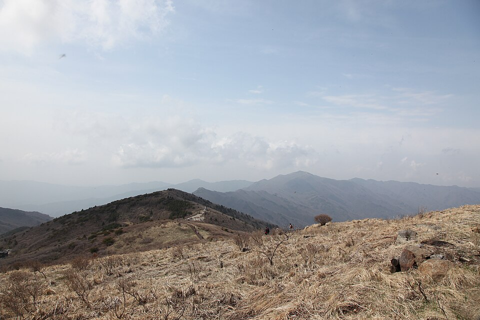
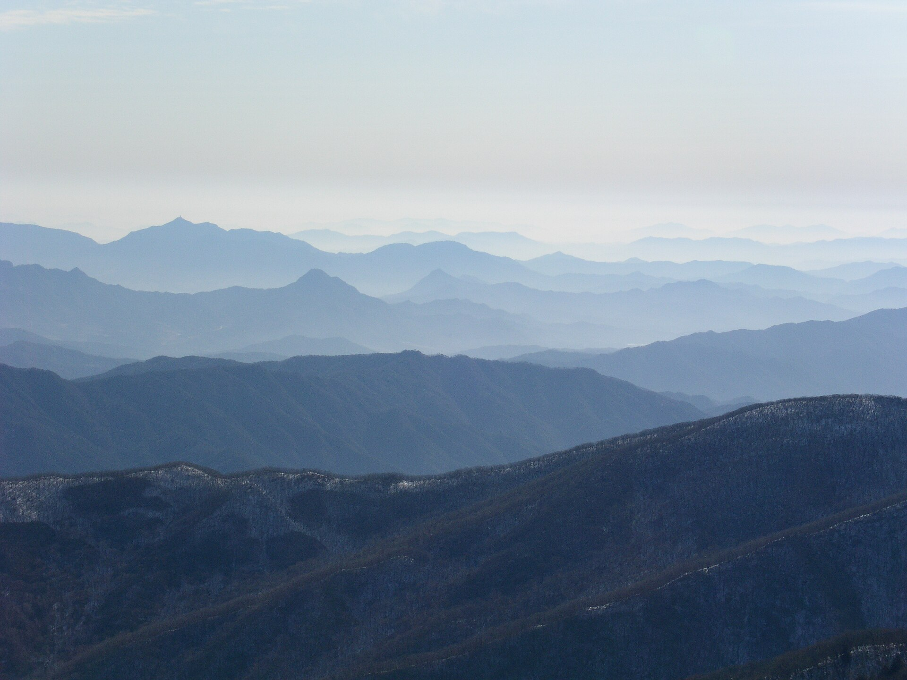
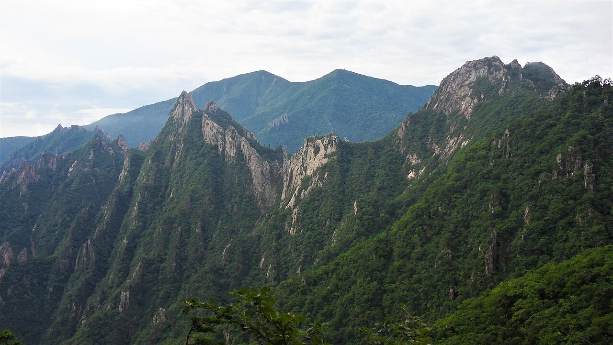
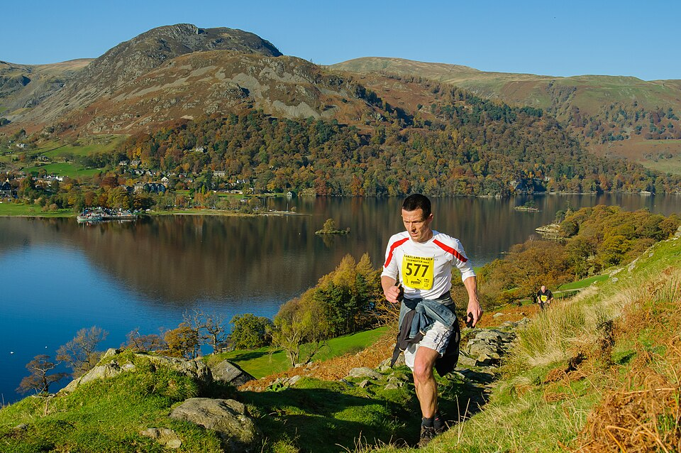

코스를 고릅니다
50K, 25K, 10K 가운데 하나를 고릅니다.


산 능선을 따라 달리는 50K, 25K, 10K 트레일러닝 대회입니다. 참가 신청은 2027년 1월 말 이 사이트에서 시작합니다.
50K는 해 뜨기 전에, 10K는 아침 8시에 출발합니다. 거리마다 제한 시간과 체크포인트 수가 다릅니다.

05:00 출발, 제한 12시간. 체크포인트 4곳을 지나며 가장 높은 능선까지 오릅니다.

06:30 출발, 제한 7시간. 체크포인트 2곳. 첫 트레일 대회를 마친 러너가 다음으로 고르는 거리입니다.

08:00 출발, 제한 3시간. 체크포인트 1곳. 숲길을 따라 한 번 오르고 내려옵니다.
날짜는 확정되는 대로 이 자리에 올립니다.
이 사이트에서 코스를 고르고 결제합니다.
코스별 정원이 차면 먼저 닫힙니다.
필수 장비를 모두 확인받아야 배번을 받습니다.
50K 05:00, 25K 06:30, 10K 08:00 순서로 출발합니다.

탐험과 자연을 기록해 온 내셔널지오그래픽이 직접 이름을 걸고 여는 트레일러닝 대회입니다.
휴대전화에서 바로 신청할 수 있습니다. 신청 전에 필수 장비와 환불 규정을 먼저 확인하세요.
50K, 25K, 10K 가운데 하나를 고릅니다.

이름, 연락처, 비상 연락처, 기념품 사이즈를 입력합니다.

결제가 끝나면 신청 내역을 문자와 이메일로 보냅니다.